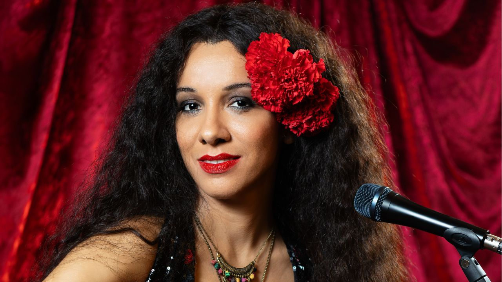

Idealizado por Marília Toledo, Gal, o Musical estreia em 6 de março no 033 Rooftop, em São Paulo

Espetáculo biográfico celebra a vida e a obra de Gal Costa (1945–2022), atravessando da infância em Salvador à adoção do filho Gabriel, com canções marcantes da carreira.
Após o sucesso de Silvio Santos Vem Aí e Ney Matogrosso – Homem com H, Marília Toledo e Emílio Boechat voltam a colaborar em um novo projeto: Gal, o Musical, homenagem à cantora Gal Costa (1945–2022), ícone do Tropicalismo e uma das vozes mais marcantes da música popular brasileira. O espetáculo estreia em 6 de março de 2026, no 033 Rooftop, no Complexo JK Iguatemi, e segue em cartaz até 10 de maio de 2026.
O texto é assinado por Marília Toledo e Emílio Boechat, com direção de Marília Toledo e Kleber Montanheiro. A direção musical e os arranjos são de Daniel Rocha. A produção é da Paris Cultural.
Elenco com forte presença nordestina e protagonista escolhida após audições em Salvador
A atriz Walerie Gondim foi escolhida para viver a protagonista. Nascida em Manaus e radicada na Bahia, ela participou diretamente do processo de seleção do elenco, com audições realizadas em Salvador. Segundo o material de divulgação, a iniciativa buscou manter fidelidade à origem e trajetória de artistas ligados à Tropicália, além de valorizar talentos locais: 80% do elenco é do Nordeste, com cinco representantes da Bahia.
Da “Maria da Graça” à musa da Tropicália: recorte biográfico e viés feminista
O musical narra como Maria da Graça Costa Penna Burgos, nascida em 26 de setembro de 1945, em Salvador (BA), se tornaria a “musa da Tropicália” e uma figura central do movimento. O release também a apresenta como símbolo feminista e cita que teria sido eleita uma das 10 maiores vozes femininas do mundo pela revista estadunidense Time.
A pesquisa dramatúrgica começou em janeiro de 2024, a partir do livro “A Todo Vapor – O Tropicalismo Segundo Gal”, de Taissa Maia. Marília Toledo afirma que, após biografias de artistas masculinos, sentiu necessidade de criar uma obra com protagonista feminina. Outra referência citada é “A Jornada da Heroína”, de Maureen Murdock, além do apoio do pesquisador Tallys Braga, que estaria escrevendo uma biografia oficial da artista.
Emílio Boechat destaca que a dramaturgia parte da tese de que o papel de Gal na Tropicália foi maior do que a imprensa “machista e patriarcal” costumava admitir e, por isso, o espetáculo assume um viés feminista, preferindo contar a história sob um prisma psicológico e profundo, em vez de apenas desfilar discos e hits.
Momentos da trama: amizades, carreira e maternidade
A história acompanha episódios como:
a infância e a relação com a mãe-solo Mariah;
a amizade com Caetano Veloso, Maria Bethânia, Gilberto Gil e Tom Zé, no início da trajetória artística no Teatro Vila Velha;
o começo da carreira e o empresário Guilherme Araújo;
a adoção do filho Gabriel, em 2008.
Canções como expressão dramática (e grandes sucessos no repertório)
De acordo com Marília Toledo, a narrativa é costurada por sucessos eternizados por Gal, como “Força Estranha”, “Baby”, “Divino, Maravilhoso”, “Vaca Profana”, “Azul”, “Vapor Barato”, “Sorte”, “Brasil”, “Balancê”, entre outros. A autora afirma que a dramaturgia privilegia as músicas como expressão dos sentimentos da artista, em um caminho “mais musical do que narrativo”.
Encenação, cenografia imersiva e referências a Hélio Oiticica
A direção compartilhada entre Marília Toledo e Kleber Montanheiro combina, segundo o texto, um olhar de cenas curtas e dinâmicas com um desenho cênico mais visual. A cenografia, assinada por Carmem Guerra, propõe uma ocupação imersiva do 033 Rooftop, aproveitando o espaço para transportar a plateia para dentro da cena. Montanheiro cita inspirações em instalações de Hélio Oiticica para sugerir os ambientes abordados na dramaturgia com dinamismo e inventividade.
Os figurinos, também assinados por Montanheiro, atravessam a segunda metade do século XX e vão se transformando ao longo do tempo — inclusive com mudanças na paleta de cores, bordados e estampas.
A coreografia e direção de movimento são de Semadha S Rodrigues, com pesquisa que incorpora influências do Candomblé, do canto e das danças dos Orixás e de manifestações da cultura popular. O material também menciona a presença de LIBRAS na pesquisa coreográfica, conectando mensagem, gesto e música.
Serviço
Gal, o Musical (Marília Toledo e Emílio Boechat)
Temporada: 6 de março a 10 de maio de 2026
Horários:
Sextas: 20h30
Sábados: 16h30 e 20h30
Domingos: 15h30 e 19h30
Local: 033 Rooftop — Complexo JK Iguatemi
Endereço: Av. Pres. Juscelino Kubitschek, 2041, Itaim Bibi, São Paulo
Duração: 2h30 com intervalo (1º ato: 1h15; intervalo: 15 min; 2º ato: 1h)
Classificação: 14 anos (menores de 14 acompanhados dos pais ou responsáveis legais)
Setores e valores
Mesa: R$ 150 (meia) a R$ 300 (inteira)
Bistrô Alto: R$ 125 (meia) a R$ 250 (inteira)
Plateia: R$ 100 (meia) e R$ 200 (inteira)
Popular: R$ 25 (meia) e R$ 50 (inteira)
Desconto: clientes Santander têm 30% de desconto nos ingressos inteiros, limitados a 2 por CPF (conforme material).
Ingressos
Internet: https://www.sympla.com.br/
Bilheteria física: Teatro SantanderFuncionamento: todos os dias das 12h às 18h; em dias de espetáculos, até o início da apresentação. Há totem de autoatendimento 24h para compras sem taxa de conveniência.